Praktikum ini melanjutkan aplikasi ResepKu dari Praktikum 6. Sebelumnya daftar resep hanya berisi teks dan huruf inisial. Praktikum ini bertujuan menampilkan foto resep dari internet tanpa membuat aplikasi berat, serta menampilkan resep yang sama sebagai list maupun grid. Setelah menyelesaikan praktikum, mahasiswa diharapkan mampu:
-
mendaftarkan asset gambar dan custom font di
pubspec.yaml, lalu memakainya denganImage.assetdanThemeData; -
menampilkan gambar dari internet dengan
Image.networkbeserta loading state dan error state; -
menampilkan data dengan
ListView.builderdanGridView.builder; -
mengganti tampilan list dan grid dengan state lokal
(
setState) tanpa mengganggu state favorit di Provider.
Asset dan gambar. Flutter menampilkan gambar dari dua sumber yang berbeda sifatnya. Gambar asset adalah file di dalam project yang ikut ter-bundle ke APK sehingga selalu tersedia tanpa koneksi, sedangkan gambar network diunduh dari URL dan baru tersedia setelah unduhan selesai.
| Aspek | Image.asset | Image.network |
|---|---|---|
| Sumber | File di dalam project (ikut ter-bundle ke APK) | URL di internet |
| Kapan tersedia | Langsung, tanpa koneksi | Setelah selesai diunduh |
| Perlu didaftarkan |
Ya, di pubspec.yaml
|
Tidak |
| Perlu loading dan error state | Jarang | Wajib: koneksi bisa lambat atau putus |
| Contoh di ResepKu | Logo dan gambar placeholder | Foto resep |
Loading dan error state.
Image.network menyediakan
loadingBuilder yang dipanggil berkali-kali selama
foto diunduh (bernilai null pada
loadingProgress bila selesai) dan
errorBuilder yang dipanggil bila foto gagal dimuat.
cacheWidth menentukan lebar dalam piksel saat foto
di-decode, sehingga foto kecil tidak membuang memory.
ListView.builder dan GridView.builder. Keduanya
membuat item secara lazy, yaitu hanya saat dibutuhkan,
sehingga efisien untuk data banyak. Perbedaannya,
ListView menyusun satu kolom ke bawah, sedangkan
GridView menyusun beberapa kolom dan memerlukan
gridDelegate (jumlah kolom, jarak antar kartu, dan
rasio lebar banding tinggi).
| Aspek | ListView.builder | GridView.builder |
|---|---|---|
| Susunan | Satu kolom, item ke bawah | Beberapa kolom (baris dan kolom) |
| Parameter khusus | — |
gridDelegate (jumlah kolom, spacing, rasio)
|
| Pembuatan item | Lazy: saat dibutuhkan | Lazy: saat dibutuhkan |
Ephemeral state dan app state. Pilihan tampilan
list atau grid hanya dibutuhkan oleh HomePage,
sehingga cukup disimpan sebagai state lokal dengan
setState. Daftar favorit dibutuhkan banyak halaman,
sehingga tetap disimpan di FavoriteProvider seperti
pada Praktikum 6. Karena letak keduanya terpisah, mengganti
tampilan tidak mengganggu favorit.
- Laptop / Komputer dengan Flutter SDK (versi stable) dan Dart terinstall
- Visual Studio Code (Code Editor) dengan ekstensi Flutter & Dart
-
Emulator Android atau HP Android yang terhubung ke internet,
karena foto resep diambil dari
cdn.dummyjson.com -
Project
resepkudari Praktikum 6 (dengan Provider dan tema gelap) -
File asset:
logo.png,placeholder.png, dan tiga font Poppins (Regular, Medium, Bold) - Modul Praktikum Aplikasi Mobile — Praktikum 7: List, Grid, Gambar, dan Asset pada ResepKu
Praktikum dikerjakan dalam empat bagian pada project
resepku yang sama (tidak membuat project baru).
Bagian A menambahkan asset dan font Poppins.
Bagian B menampilkan foto resep dengan
RecipeImage dan ListView.builder.
Bagian C menambahkan GridView dan
tombol ganti tampilan. Bagian D memasang foto
besar pada halaman detail lalu menguji seluruh fitur.
| File | Bagian | Perubahan |
|---|---|---|
pubspec.yaml
|
A | Mendaftarkan folder asset dan font Poppins |
main.dart
|
A |
Menambah fontFamily: 'Poppins' pada tema
terang dan gelap
|
home_page.dart
|
A, B, C |
Logo di AppBar, ListView.builder, lalu tombol
list/grid
|
recipe_image.dart (baru)
|
B | Foto dari internet dengan loading dan error state |
recipe_tile.dart
|
B | Thumbnail foto 56 × 56 |
recipe_grid_card.dart (baru)
|
C | Kartu foto untuk tampilan grid |
detail_page.dart
|
D | Foto besar di bagian atas |
2411531002 • Saskia Alifah dari Praktikum
6.
Folder assets dibuat di folder utama project,
sejajar dengan lib dan bukan di dalamnya.
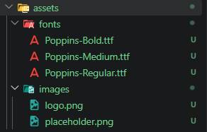
-
mkdir assets,mkdir assets/images, danmkdir assets/fonts— membuat folder asset beserta dua subfolder. Folder juga dapat dibuat lewat Explorer VS Code. -
logo.pngdanplaceholder.pngdisalin keassets/images, sedangkanPoppins-Regular.ttf,Poppins-Medium.ttf, danPoppins-Bold.ttfdisalin keassets/fonts. -
Nama file harus persis sama, termasuk huruf besar dan kecil,
karena nama inilah yang dirujuk di
pubspec.yamldan di kode.
Poppins akan dipakai oleh
main.dart (A.3).
File asset baru dikenali Flutter setelah didaftarkan pada bagian
flutter: di pubspec.yaml.
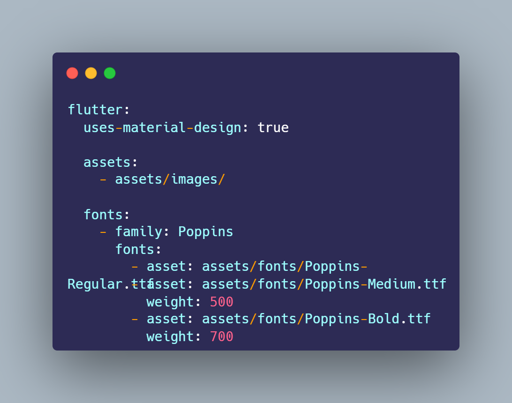
-
assets: - assets/images/— mendaftarkan seluruh file di folder tersebut. Tanda/di akhir berarti satu folder, sehingga file baru di folder itu tidak perlu didaftarkan satu per satu. -
family: Poppins— nama font yang dipakai di kode. Nilainya harus sama persis denganfontFamilypadaThemeData. -
weight: 500danweight: 700— ketebalan untuk file Medium dan Bold. File tanpaweightdianggap normal (400). -
Setelah disimpan dijalankan
flutter pub get(VS Code biasanya menjalankannya otomatis).
assets: dan fonts: harus sejajar
dengan uses-material-design:, dan setiap tingkat
dijorokkan 2 spasi. fonts: kedua harus berada di
dalam item - family: Poppins, serta
weight sejajar dengan asset. Salah
satu spasi saja menimbulkan error saat
flutter pub get. Hasil salinan dari PDF modul
sempat kehilangan spasi sehingga indentasi diperbaiki secara
manual.
family: Poppins pada
pubspec.yaml (A.2) dirujuk oleh nilai
fontFamily di sini; keduanya harus persis sama.
Font Poppins dipasang pada tema terang dan tema gelap agar seluruh teks aplikasi memakainya.
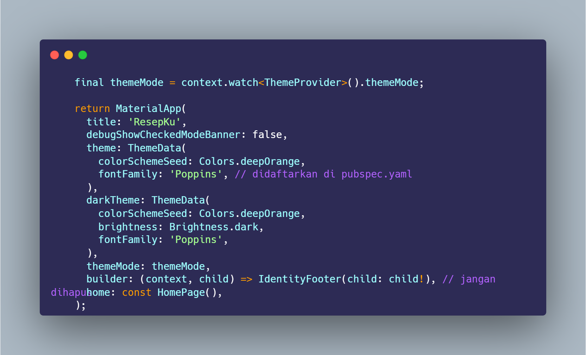
-
fontFamily: 'Poppins'padathemedandarkTheme— seluruhTextmemakai Poppins tanpa menyetel satu per satu, baik pada mode terang maupun gelap. -
themeMode: themeMode— nilainya dibaca dariThemeProvider(Latihan 1 Praktikum 6), sehingga mode gelap tetap berfungsi. -
builder: (context, child) => IdentityFooter(child: child!)— footer identitas dari Praktikum 6 tidak dihapus.
assets/images/ yang didaftarkan pada
A.2.
Judul AppBar halaman Home diganti dari teks biasa menjadi logo dan teks.
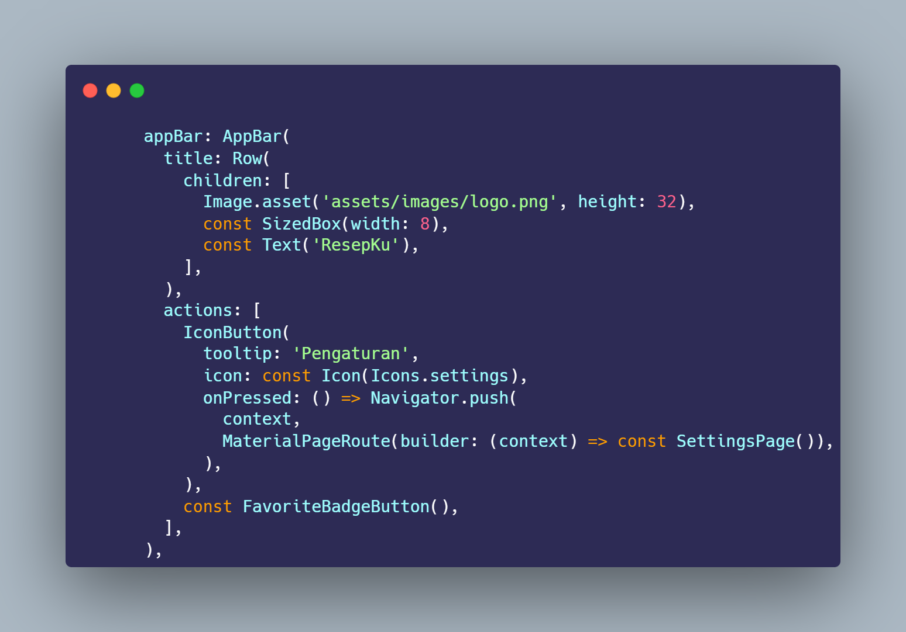
-
title: Row(children: [...])— menyusun logo dan teks sejajar ke samping. -
Image.asset('assets/images/logo.png', height: 32)— memuat logo dari asset dengan tinggi 32. -
SizedBox(width: 8)— jarak antara logo dan teks "ResepKu". -
Bagian
actions(tombol Pengaturan dan badge favorit) danbodytidak berubah.
Asset dan font baru dimasukkan saat build, sehingga
aplikasi dihentikan lalu dijalankan ulang dengan
flutter run; hot reload dan hot restart tidak
selalu cukup.
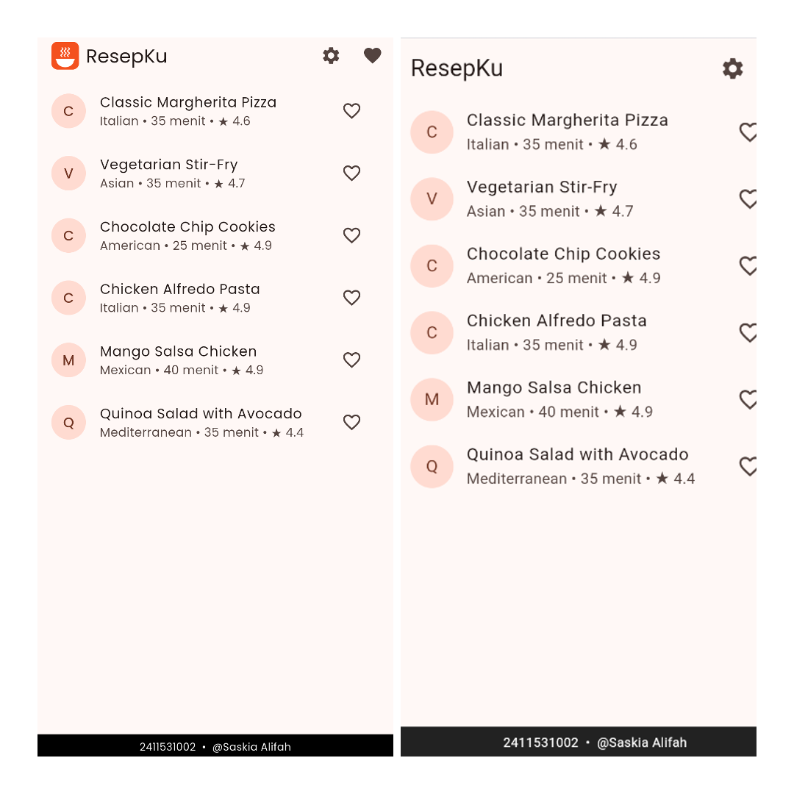
Home menampilkan logo di sebelah teks "ResepKu" pada AppBar, dan seluruh teks berganti ke font Poppins. Perubahan terlihat pada bentuk huruf a dan g serta angka, yang lebih membulat dibanding tampilan Praktikum 6.
Foto resep akan dipakai di tiga tempat: list, grid, dan halaman detail. Karena itu logika menampilkan foto dibuat sekali dalam satu widget, lalu dipakai ulang.
placeholder.png yang
dipakai pada error state berasal dari folder asset yang
didaftarkan pada A.2.
Widget ini menampilkan foto dari URL lengkap dengan loading state dan error state.
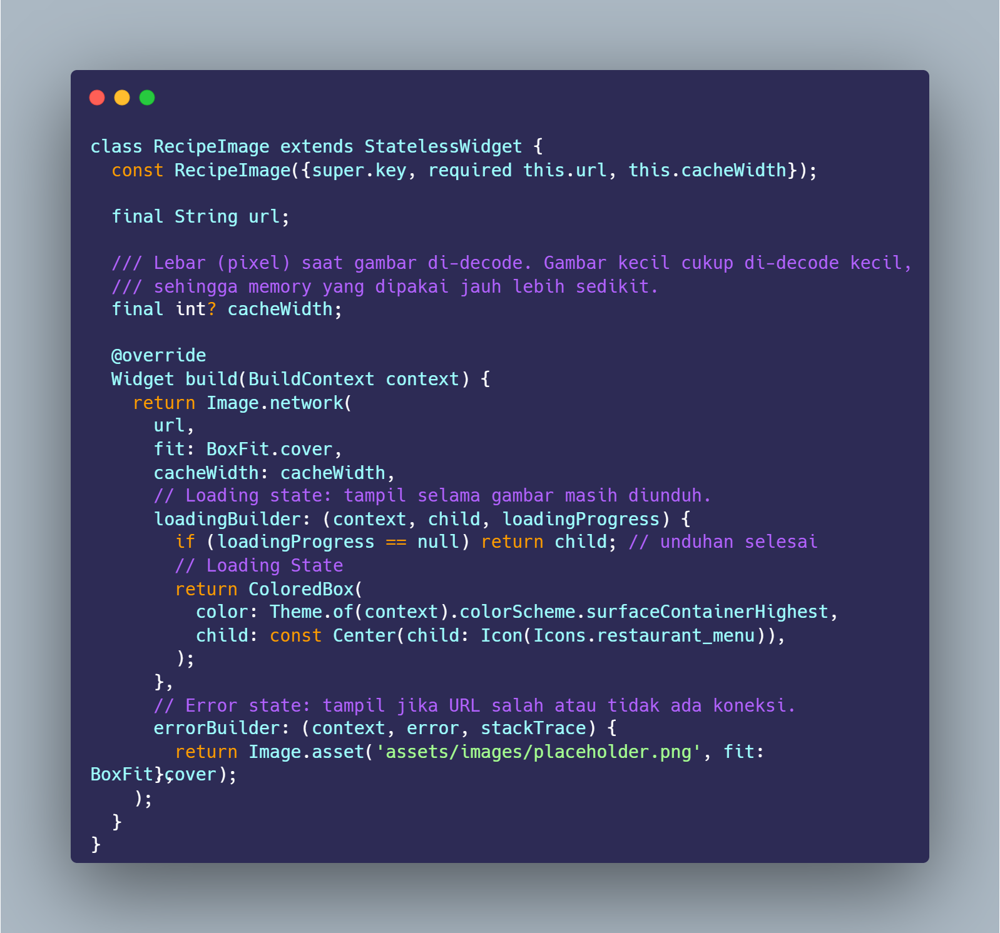
-
RecipeImage({required this.url, this.cacheWidth})— menerima alamat foto dan lebar decode yang bersifat opsional. -
fit: BoxFit.cover— foto mengisi seluruh kotak tanpa berubah proporsi; bagian yang berlebih dipotong. -
cacheWidth— lebar dalam piksel saat foto di-decode. Foto asli dari server berukuran besar, sehingga thumbnail kecil cukup di-decode kecil agar hemat memory. -
loadingBuilder— dipanggil berkali-kali selama foto diunduh. BilaloadingProgress == null, unduhan selesai dan foto (child) ditampilkan; selain itu tampilColoredBoxberikonIcons.restaurant_menusebagai loading state. -
errorBuilder— dipanggil bila foto gagal dimuat (URL salah atau tidak ada koneksi) dan menampilkanImage.asset('assets/images/placeholder.png')sebagai error state.
RecipeImage dari B.1
dipakai di sini, dan ikon favorit tetap membaca
FavoriteProvider dari Praktikum 6.
Pada RecipeTile, leading berupa
CircleAvatar diganti dengan foto berukuran 56 × 56
bersudut membulat.
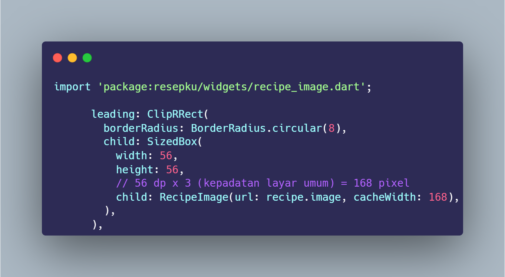
-
ClipRRect(borderRadius: BorderRadius.circular(8))— memotong foto dengan sudut membulat. -
SizedBox(width: 56, height: 56)— ukuran thumbnail. -
RecipeImage(url: recipe.image, cacheWidth: 168)— foto thumbnail. Tampil selebar 56 dp, dan pada layar berkepadatan umum (devicePixelRatio3×) setara 56 × 3 = 168 piksel, sehingga men-decode foto lebih besar hanya membuang memory. -
context.watchuntukisFavoritedancontext.readuntuktoggletetap seperti pada Praktikum 6.
RecipeTile yang
dibangun di sini sudah berisi thumbnail dari B.2.
body yang sebelumnya
ListView(children: [...]) diganti
ListView.builder, yang membuat item hanya saat
dibutuhkan.
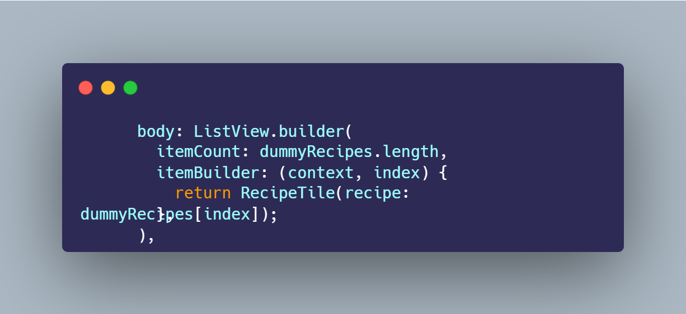
-
itemCount: dummyRecipes.length— jumlah item yang akan dibuat. -
itemBuilder: (context, index) => RecipeTile(recipe: dummyRecipes[index])— dipanggil untuk setiap item yang akan tampil di layar. - Item di luar layar tidak dibuat sampai dibutuhkan, sehingga efisien bila data bertambah banyak (Praktikum 8: 50 resep).
- Logo di AppBar (A.4) dan tombol Pengaturan serta badge favorit tetap ada.
Error state diuji dengan membuat foto gagal dimuat.
- Cara pertama: aktifkan mode pesawat (airplane mode) pada emulator atau HP, lalu tutup dan buka kembali aplikasi.
-
Cara kedua: ubah sementara URL foto resep pertama di
dummy_recipes.dartmenjadi salah (misalnya1.webpx), lalu hot restart. - Hasil yang diharapkan: foto yang gagal diganti gambar placeholder dan tidak muncul error merah. Setelah pengujian, koneksi atau URL dikembalikan seperti semula.
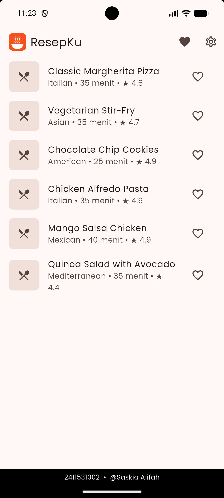
Saat aplikasi pertama dibuka, setiap baris menampilkan kotak
abu-abu berikon alat makan selama foto masih diunduh. Itulah
loadingBuilder yang bekerja, dan setelah unduhan
selesai kotak diganti foto.
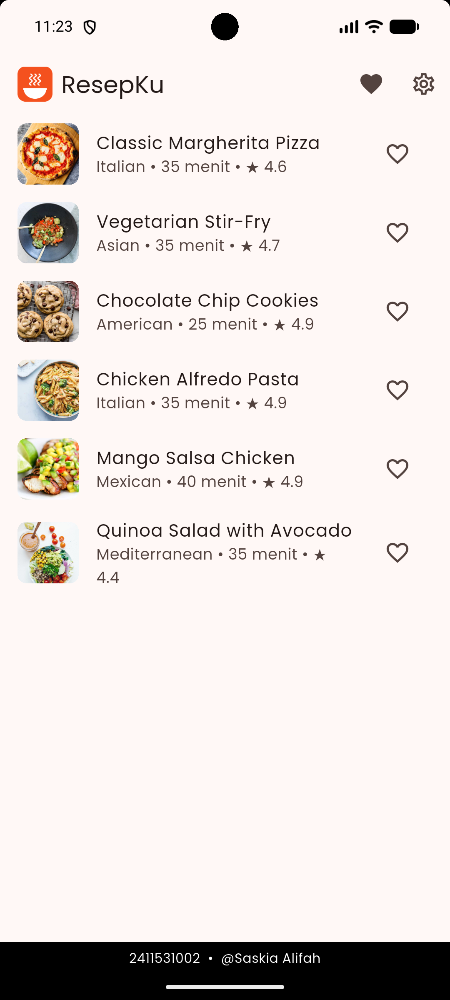
Setiap resep kini memiliki thumbnail foto 56 × 56 bersudut membulat, menggantikan huruf inisial. Ikon favorit di sisi kanan tetap berfungsi.
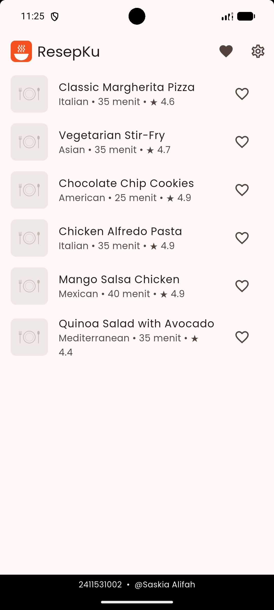
Foto yang gagal diunduh diganti gambar
placeholder.png dan aplikasi tidak menampilkan
error merah, karena errorBuilder menangani
kegagalan.
RecipeImage (B.1) dan membaca
FavoriteProvider yang sama dengan
RecipeTile (B.2).
Kartu grid memuat foto yang mengisi kartu, tombol favorit di atas foto, serta nama dan info singkat resep.
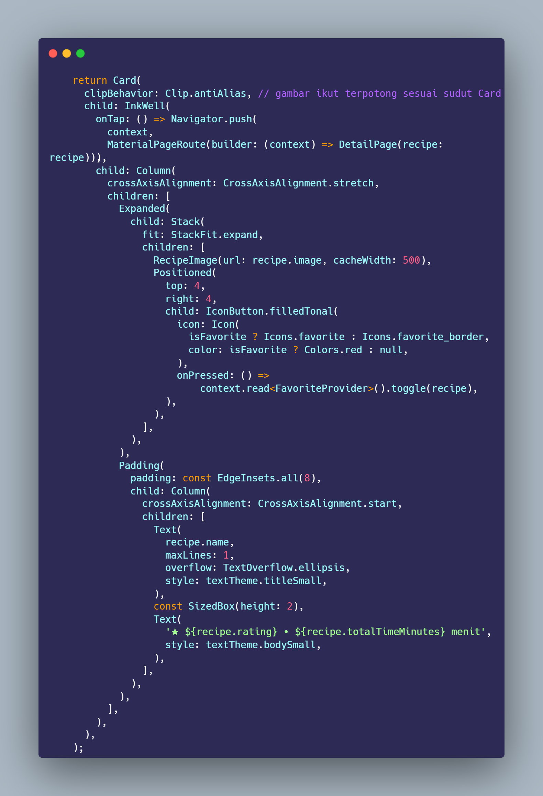
-
Card(clipBehavior: Clip.antiAlias)— foto ikut terpotong mengikuti sudut Card yang membulat. -
InkWell(onTap: ...)— seluruh kartu dapat di-tap dengan efek ripple untuk membukaDetailPage. -
Expanded+Stack(fit: StackFit.expand)— foto mengisi sisa tinggi kartu, dan tombol favorit diletakkan di atas foto. -
RecipeImage(url: recipe.image, cacheWidth: 500)— foto grid lebih besar dari thumbnail, sehinggacacheWidth-nya 500. -
Positioned(top: 4, right: 4)berisiIconButton.filledTonal— tombol favorit di pojok kanan atas foto, memakaicontext.watchdancontext.readyang sama denganRecipeTile. -
Text(recipe.name, maxLines: 1, overflow: TextOverflow.ellipsis)— nama yang terlalu panjang dipotong dengan tanda …, agar kartu tidak overflow.
RecipeGridCard dari
C.1 dibangun di _buildGrid(), dan
_buildList() melanjutkan
ListView.builder dari B.3.
HomePage diubah menjadi
StatefulWidget karena memiliki state
_isGrid. State ini cukup memakai
setState karena hanya HomePage yang
membutuhkannya.
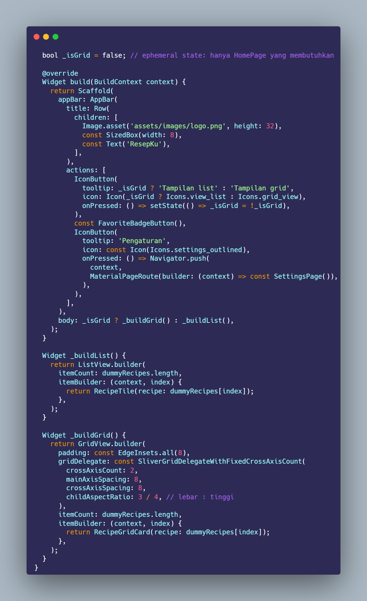
-
bool _isGrid = false;— menentukan tampilan yang aktif; nilai awalfalse(list). -
IconButton(onPressed: () => setState(() => _isGrid = !_isGrid))— membalik nilai dan membangun ulang halaman. Ikon berganti antaraIcons.grid_viewdanIcons.view_listsesuai tampilan, dantooltipmemudahkan pengujian. -
body: _isGrid ? _buildGrid() : _buildList()— memilih tampilan. -
_buildList()—ListView.builderyang membangunRecipeTile. -
_buildGrid()—GridView.builderdenganSliverGridDelegateWithFixedCrossAxisCount:crossAxisCount: 2(dua kolom),mainAxisSpacing: 8dancrossAxisSpacing: 8(jarak antar kartu), sertachildAspectRatio: 3 / 4(kartu lebih tinggi dari lebarnya agar foto dan teks muat).
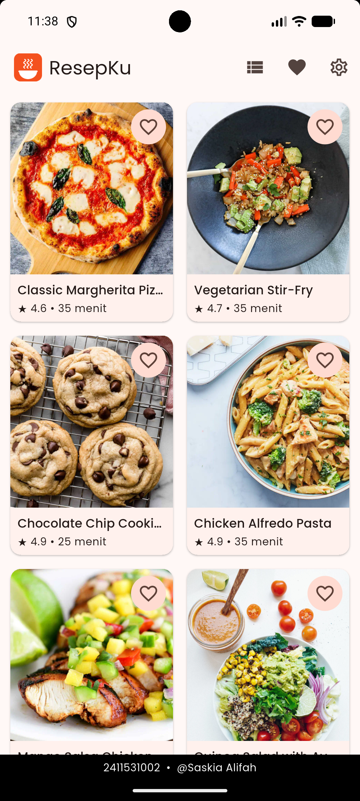
Resep tampil sebagai kartu dua kolom dengan foto, tombol favorit di pojok kanan atas foto, serta nama dan info singkat di bawahnya. Ikon tombol di AppBar berubah menjadi ikon list.
Pada layar dengan lebar 360 dp, ukuran tiap kartu grid dihitung
dengan rumus dari Pertemuan 10. Lebar kartu adalah sisa lebar
layar setelah dikurangi padding dan jarak antar kolom, lalu
dibagi jumlah kolom. Tinggi kartu didapat dari lebar dibagi
childAspectRatio.
-
Diketahui: lebar layar = 360 dp;
padding= 8 di keempat sisi;crossAxisCount= 2;crossAxisSpacing= 8;childAspectRatio= 3 / 4. - Lebar tersedia = 360 − (8 + 8) = 344 dp.
- Jarak antar kolom = (2 − 1) × 8 = 8 dp.
- Lebar kartu = (344 − 8) ÷ 2 = 336 ÷ 2 = 168 dp.
- Tinggi kartu = lebar ÷ rasio = 168 ÷ (3/4) = 168 × 4/3 = 224 dp.
| Yang dihitung | Hasil |
|---|---|
| Lebar kartu (dp) | 168 |
| Tinggi kartu (dp) | 224 |
Lebar kartu 168 dp pada layar berkepadatan 3× setara 504
piksel fisik, sehingga cacheWidth: 500 pada
RecipeGridCard sudah mendekati kebutuhan tanpa
memboroskan memory.
RecipeImage yang sama
dengan yang dipakai di list (B.2) dan grid (C.1), sehingga
loading dan error state juga berlaku di halaman detail.
Widget RecipeImage dipakai ulang untuk menampilkan
foto besar pada halaman detail.
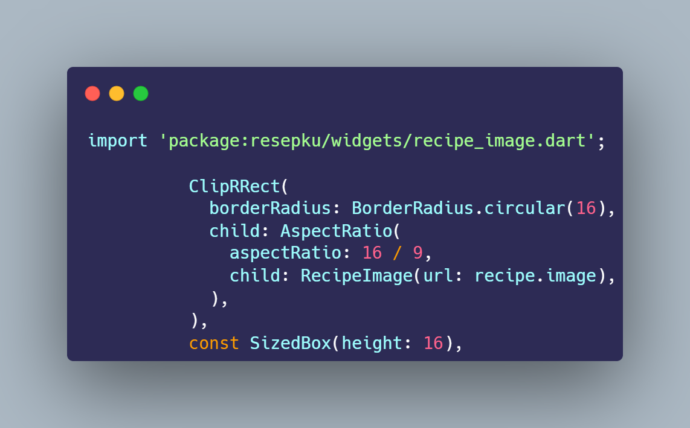
-
import 'package:resepku/widgets/recipe_image.dart';— memuat widget foto. -
ClipRRect(borderRadius: BorderRadius.circular(16))— foto bersudut membulat. -
AspectRatio(aspectRatio: 16 / 9)— tinggi foto mengikuti lebar dengan perbandingan 16 : 9. -
RecipeImage(url: recipe.image)—cacheWidthtidak diisi karena foto tampil hampir selebar layar. -
SizedBox(height: 16)memberi jarak ke konten di bawahnya.
D.2 Menguji aplikasi. Aplikasi dihentikan lalu dijalankan kembali, kemudian keenam skenario berikut diuji.
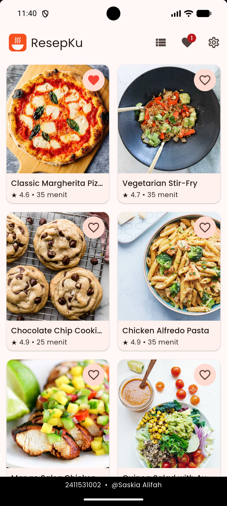
Ikon hati pada kartu Margherita berubah merah dan badge di
AppBar bertambah. Tombol favorit pada kartu grid memakai
FavoriteProvider yang sama dengan
RecipeTile.
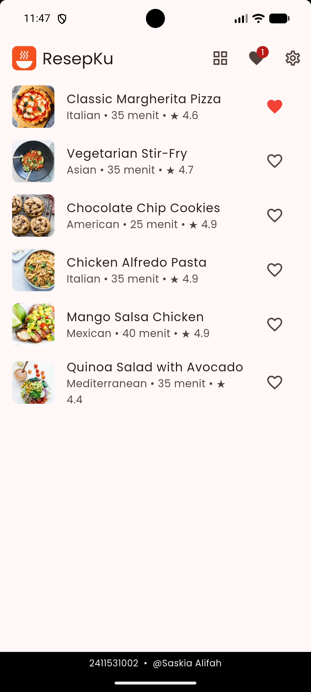
Setelah kembali ke mode list, ikon hati Margherita tetap merah.
Status favorit tidak hilang walaupun widget yang menampilkannya
berganti dari RecipeGridCard ke
RecipeTile.
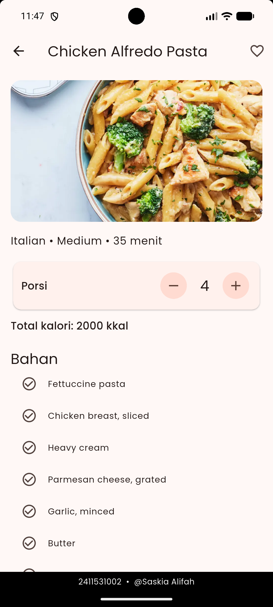
Halaman detail terbuka dengan foto besar berbentuk 16 : 9 di bagian atas, diikuti info resep, porsi, total kalori, dan daftar bahan.
Tabel uji Langkah D.2
| No | Skenario | Hasil yang diharapkan | Sesuai? |
|---|---|---|---|
| 1 | Buka aplikasi | Logo di AppBar, font Poppins, thumbnail foto di setiap resep (lihat Checkpoint 1 dan 2) | ✓ |
| 2 | Tekan tombol grid di AppBar | Resep tampil sebagai kartu dua kolom; ikon tombol berubah menjadi ikon list (lihat Gambar D.C-2) | ✓ |
| 3 | Di mode grid, tap ikon hati pada Margherita | Ikon merah dan badge bertambah | ✓ |
| 4 | Kembali ke mode list | Ikon hati Margherita tetap merah | ✓ |
| 5 | Tap kartu Alfredo di mode grid | Halaman detail terbuka dengan foto besar di atas | ✓ |
| 6 | Aktifkan mode pesawat, tutup dan buka aplikasi | Gambar placeholder tampil tanpa error merah (lihat Checkpoint 2 error state) | ✓ |
Pertanyaan 1 — mengapa status favorit tetap sama ketika
tampilan berganti dari grid ke list, padahal
RecipeGridCard dan RecipeTile adalah
dua widget berbeda?
Status favorit tidak disimpan di dalam salah satu widget,
melainkan di FavoriteProvider yang dipasang di atas
MaterialApp pada Praktikum 6. Kedua widget membaca
data yang sama lewat
context.watch<FavoriteProvider>().isFavorite(recipe)
dan mengubahnya lewat
context.read<FavoriteProvider>().toggle(recipe). Saat tampilan berganti, widget lama dibuang dan widget baru
dibuat, tetapi datanya tetap ada di provider sehingga ikon
langsung menampilkan status yang benar. Bila status disimpan
sebagai state lokal di tile, seperti pada eksperimen Praktikum 6
Bagian B, status akan hilang ketika widgetnya dibuang. Pilihan
list atau grid sendiri (_isGrid) adalah state lokal
yang hanya dibutuhkan HomePage, sehingga terpisah
dari favorit.
Pertanyaan 2 — apa yang tampil jika baris
if (loadingProgress == null) return child;
dihapus?
Yang tampil selamanya adalah kotak abu-abu berikon alat makan
(loading state), dan foto tidak pernah muncul.
loadingBuilder dipanggil terus, termasuk setelah
unduhan selesai (saat loadingProgress bernilai
null). Baris tersebut adalah satu-satunya tempat
child yang berisi foto dikembalikan. Tanpa baris itu,
builder selalu mengembalikan ColoredBox berikon,
sehingga foto yang sudah selesai diunduh tidak pernah ditampilkan.
Pertanyaan 3 — berapa piksel foto thumbnail yang di-decode
dengan dan tanpa cacheWidth: 168, jika foto asli
1200 × 800 piksel, dan apa akibatnya untuk 50 resep?
| Kondisi | Ukuran di-decode | Jumlah piksel | Memory (4 byte per piksel) |
|---|---|---|---|
Tanpa cacheWidth
|
1200 × 800 | 960.000 | sekitar 3,84 MB per foto |
Dengan cacheWidth: 168
|
168 × 112 (800 × 168 ÷ 1200 = 112) | 18.816 | sekitar 75 KB per foto |
Dengan cacheWidth: 168, jumlah piksel turun sekitar
51 kali lipat (960.000 ÷ 18.816 ≈ 51). Pada 50 resep di Praktikum
8, bila semua foto ter-decode penuh dibutuhkan sekitar 50 × 3,84
MB = 192 MB, sedangkan dengan cacheWidth hanya
sekitar 50 × 75 KB ≈ 3,8 MB. Tanpa cacheWidth,
aplikasi berisiko menjadi lambat, boros memory, bahkan ditutup
sistem karena kehabisan memory.
Pertanyaan 4 — mengapa logo memakai
Image.asset dan foto resep memakai
Image.network?
Logo adalah identitas aplikasi yang selalu dibutuhkan dan harus
tampil langsung walaupun tanpa koneksi. Karena asset ikut
ter-bundle ke APK, logo selalu tersedia, sedangkan logo dari
internet bisa lambat atau gagal tampil saat offline dan
membutuhkan loading serta error state. Foto resep sebaliknya tidak
dimasukkan ke asset karena jumlahnya banyak dan datanya berasal
dari server yang dapat berubah (pada Praktikum 8 diambil dari API
dengan 50 resep). Memasukkan semuanya ke asset akan membesarkan
ukuran APK dan memaksa rilis ulang setiap kali ada resep baru,
serta tidak dapat menampilkan data baru dari server.
Di bawah AppBar Home ditambahkan deretan
ChoiceChip yang dapat digeser ke samping: "Semua"
ditambah setiap cuisine yang ada pada data. Memilih sebuah chip
hanya menampilkan resep dengan cuisine tersebut, baik di mode list
maupun grid.
State pilihan cuisine dan data yang sudah disaring disiapkan di
_HomePageState.
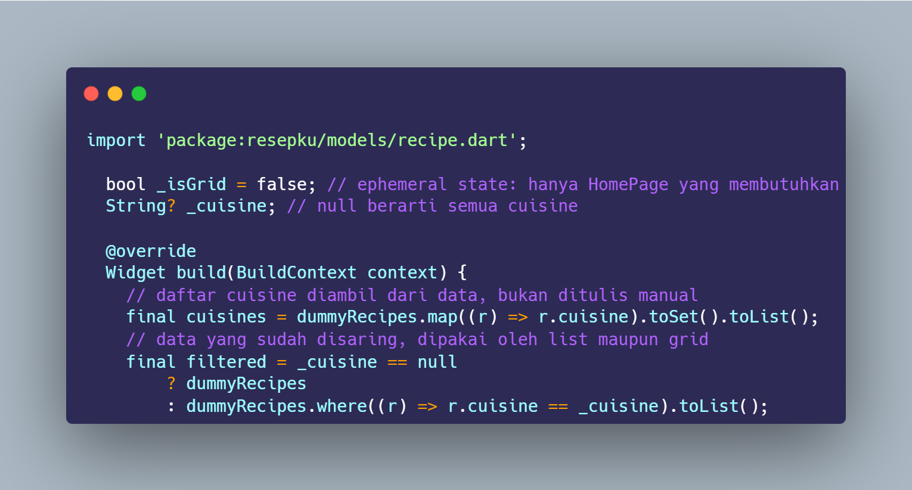
-
String? _cuisine;— cuisine yang dipilih; nilainullberarti semua cuisine. -
dummyRecipes.map((r) => r.cuisine).toSet().toList()— daftar cuisine diambil dari data, bukan ditulis manual.toSet()membuang duplikat, sehingga tiap cuisine muncul sekali. -
filtered— bila_cuisine == nullmemakai seluruhdummyRecipes, selain itudummyRecipes.where((r) => r.cuisine == _cuisine).toList(). -
Import
models/recipe.dartditambahkan karena fungsi list dan grid kini menerimaList<Recipe>.
_isGrid,
_buildList, dan _buildGrid berasal
dari C.2, dan kini menerima data hasil penyaringan.
Body kini berisi deretan chip di atas, lalu list atau grid di bawahnya.
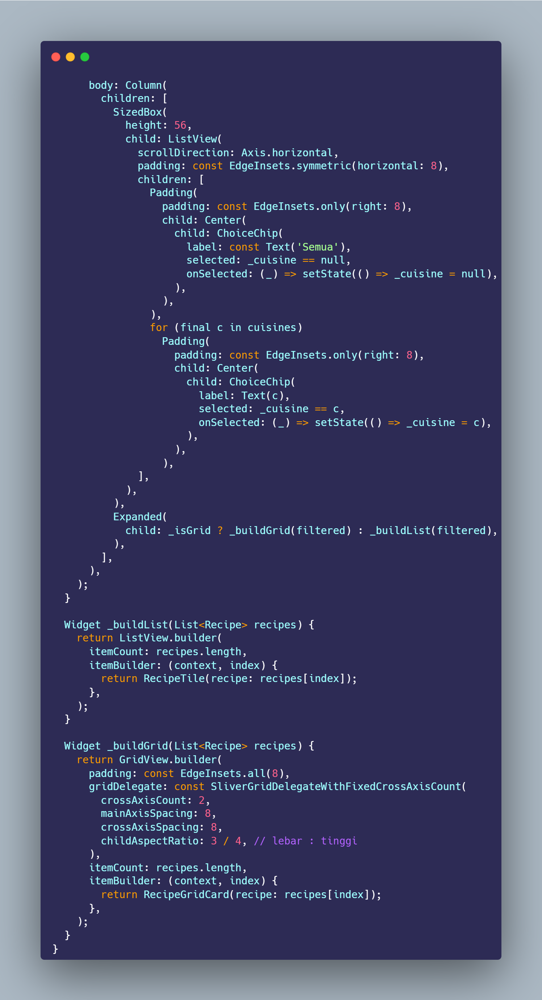
-
SizedBox(height: 56)membungkusListView(scrollDirection: Axis.horizontal)— ListView horizontal di dalam Column wajib diberi tinggi, kalau tidak terjadi error ukuran. -
ChoiceChip(label: Text('Semua'), selected: _cuisine == null, onSelected: ...)dan satu chip untuk tiap cuisine memakaifor (final c in cuisines).onSelectedmemanggilsetStateuntuk mengubah_cuisine. -
Expanded(child: _isGrid ? _buildGrid(filtered) : _buildList(filtered))— list atau grid yang mengisi sisa layar di dalam Column dibungkus Expanded. -
_buildList(List<Recipe> recipes)dan_buildGrid(List<Recipe> recipes)memakairecipes.lengthdanrecipes[index], bukandummyRecipes, sehingga data yang sudah disaring dipakai di kedua mode.
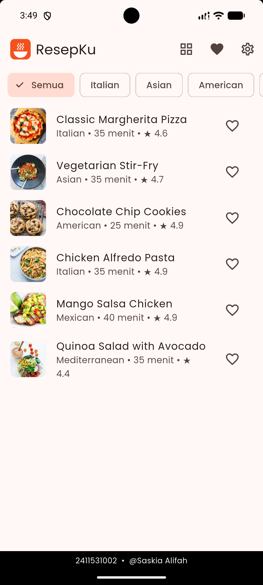
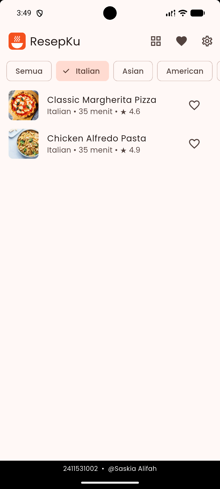
Chip "Semua" menampilkan seluruh resep, sedangkan chip "Italian" hanya menampilkan Classic Margherita Pizza dan Chicken Alfredo Pasta. Deretan chip dapat digeser ke samping untuk melihat cuisine lainnya.
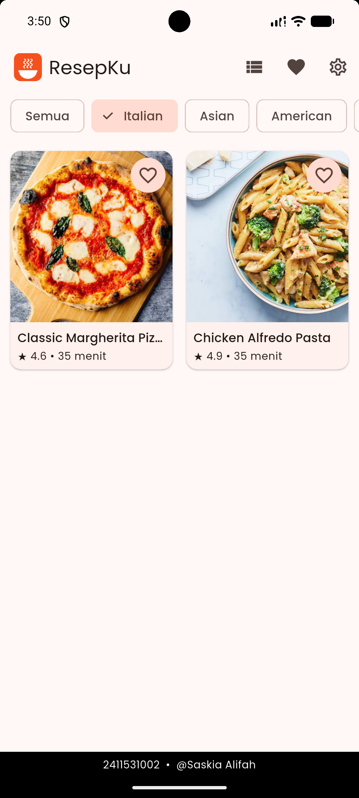
Filter tetap aktif setelah tampilan berganti ke grid, dan grid hanya berisi resep Italian. Ini membuktikan data hasil penyaringan dipakai oleh list maupun grid.
FavoriteProvider.toggle() dari Praktikum 6 dipakai
sebagai cara menghapus, dan RecipeImage berasal
dari B.1.
Halaman Favorit diubah agar memakai
ListView.separated dengan thumbnail dan dapat
dihapus dengan digeser ke kiri.
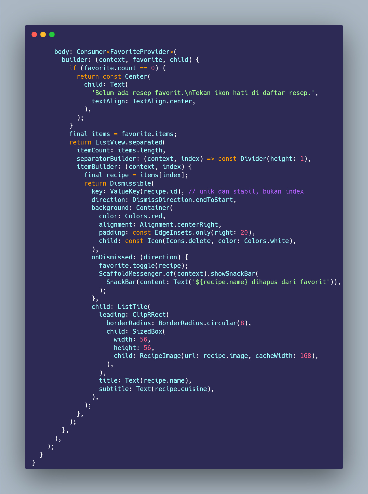
-
ListView.separated(separatorBuilder: ... const Divider(height: 1))— garis pemisah di antara item. -
leading: ClipRRect(... RecipeImage(url: recipe.image, cacheWidth: 168))— thumbnail yang sama denganRecipeTile. -
Dismissible(key: ValueKey(recipe.id), direction: DismissDirection.endToStart)— item dapat digeser ke kiri. Key memakairecipe.idyang unik dan stabil, bukanindex, supaya Flutter tidak salah mengenali item setelah daftar berubah. -
background— latar merah dengan ikon tong sampah yang terlihat saat baris digeser. -
onDismissed— memanggilfavorite.toggle(recipe)lalu menampilkanSnackBarberisi nama resep yang dihapus.
Tombol "Hapus semua" dari Latihan 2 Praktikum 6 dipertahankan pada AppBar.
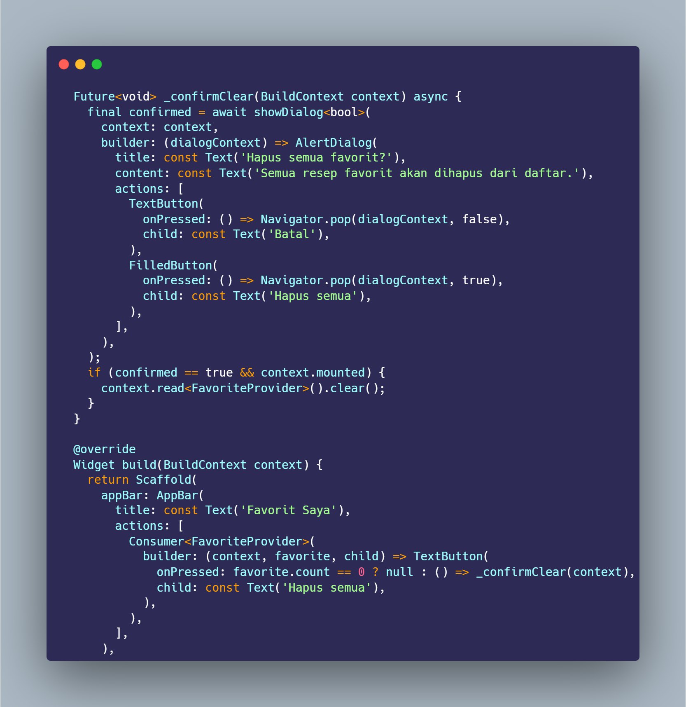
-
Consumer<FavoriteProvider>padaactions— tombol ikut berubah saat jumlah favorit berubah. -
onPressed: favorite.count == 0 ? null : () => _confirmClear(context)— tombol nonaktif ketika daftar kosong. -
_confirmClear()— menampilkanAlertDialogkonfirmasi, danclear()hanya dijalankan bila pengguna memilih "Hapus semua".
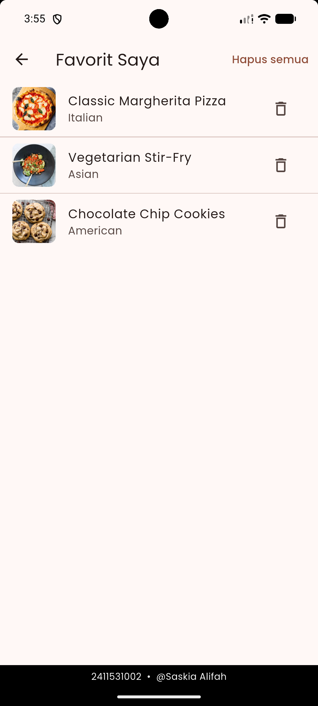
Setiap baris menampilkan thumbnail foto, dipisahkan garis
Divider, dan tombol "Hapus semua" tetap ada di
AppBar.
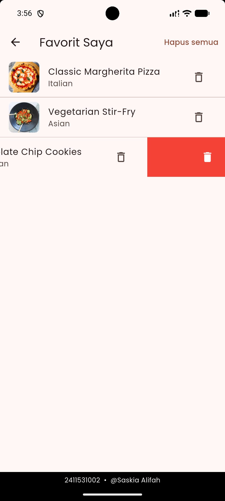
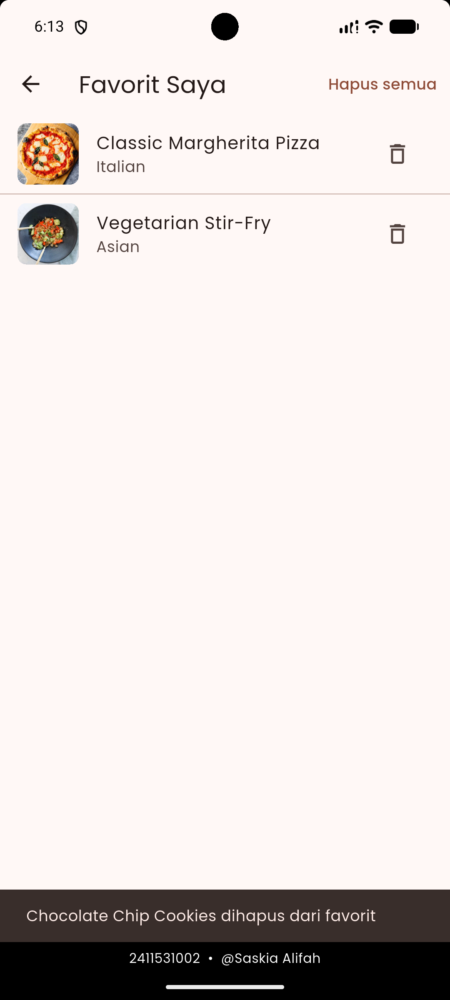
Baris yang digeser ke kiri menampilkan latar merah dengan ikon
tong sampah, dan setelah terhapus muncul SnackBar berisi nama
resep. Badge di Home ikut berkurang karena penghapusan melalui
FavoriteProvider.
Halaman detail diubah menjadi CustomScrollView.
Package cached_network_image dipasang dengan
flutter pub add cached_network_image agar foto
tersimpan di disk dan tidak diunduh ulang saat aplikasi dibuka
kembali.
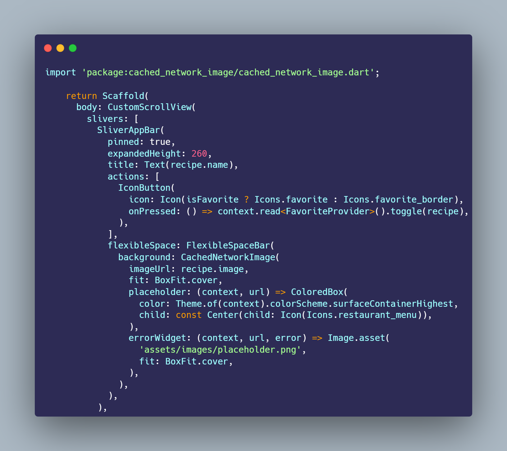
-
SliverAppBar(pinned: true, expandedHeight: 260)— AppBar setinggi 260 dp yang mengecil saat digulir dan tetap menempel di atas (pinned). -
FlexibleSpaceBar(background: CachedNetworkImage(...))— foto resep menjadi latar AppBar. -
placeholderdanerrorWidgetpadaCachedNetworkImagemenggantikan loading dan error state milikRecipeImage. -
Judul resep dan tombol favorit tetap berada di
SliverAppBar.
Isi halaman dipecah menjadi sliver agar ikut digulir bersama AppBar.
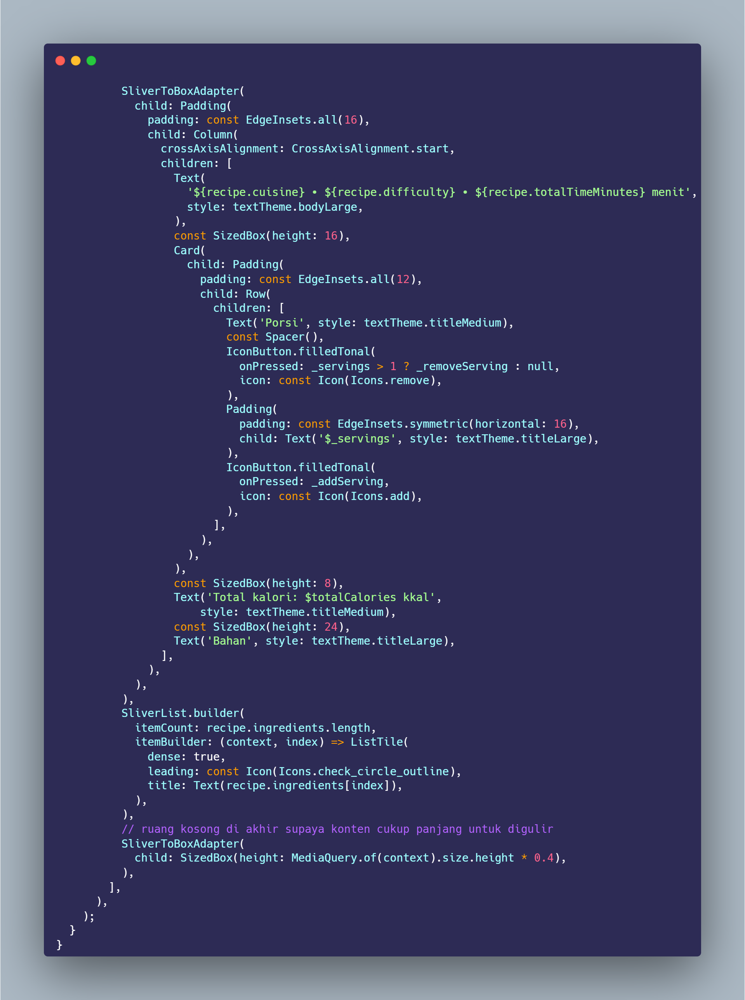
-
SliverToBoxAdapter— membungkus widget biasa (info resep, kartu porsi, total kalori, dan judul "Bahan") agar dapat berada di dalamCustomScrollView. -
SliverList.builder(itemCount: recipe.ingredients.length, ...)— daftar bahan yang dibuat lazy, menggantikan perulanganfor. -
SliverToBoxAdapter(child: SizedBox(height: MediaQuery.of(context).size.height * 0.4))— ruang kosong di akhir halaman supaya konten cukup panjang untuk digulir. Tanpa ini, pada resep berbahan sedikit seluruh isi muat di layar sehingga AppBar tidak sempat mengecil.
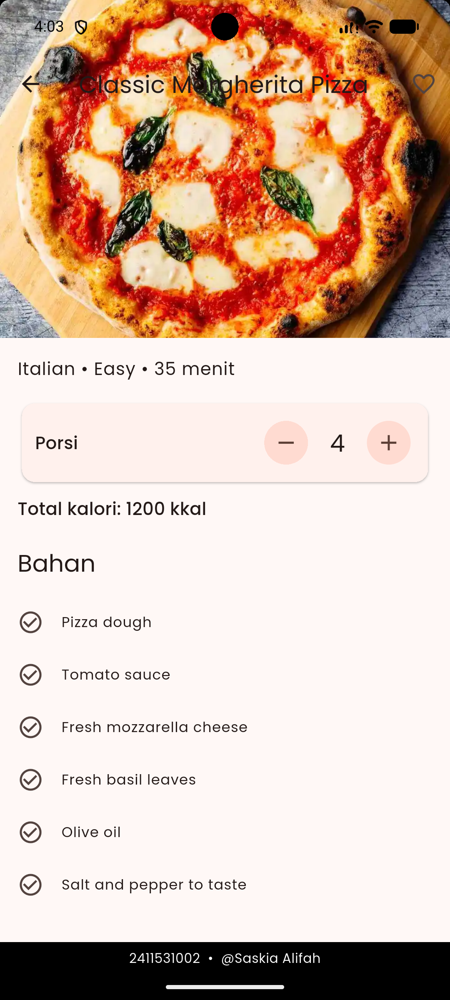
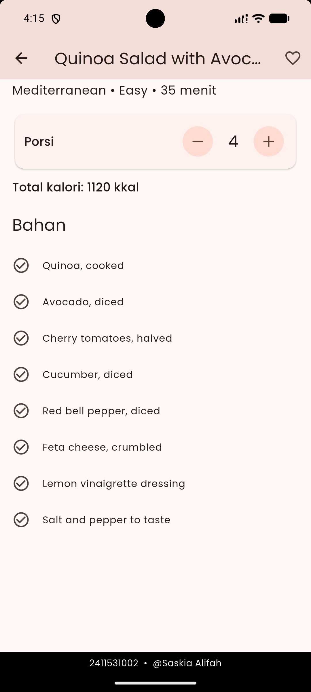
Saat baru dibuka, foto tampil besar. Setelah digulir ke bawah, foto mengecil menjadi AppBar yang menempel di atas dengan judul resep, sementara porsi dan bahan ikut bergulir.
ListView.separated, thumbnail, dan
Dismissible. Latihan 3 (bonus) juga dikerjakan.
Pertanyaan utama praktikum ini: bagaimana menampilkan foto resep dari internet tanpa membuat aplikasi berat, dan bagaimana menampilkan resep yang sama sebagai list maupun grid. Hasil praktikum menjawabnya dalam tiga bagian yang saling terhubung.
Asset dan font. Logo, gambar placeholder, dan
font Poppins didaftarkan pada pubspec.yaml lalu
dipakai lewat Image.asset dan
fontFamily. Checkpoint 1 membuktikan logo tampil di
AppBar dan seluruh teks berganti ke Poppins. Ketelitian indentasi
YAML menjadi kunci, karena satu spasi yang salah menimbulkan error
pada flutter pub get.
Foto dari internet tanpa membuat aplikasi berat.
Widget RecipeImage dibuat sekali dan dipakai di list,
grid, dan detail. Aplikasi tetap ringan karena tiga hal:
ListView.builder dan
GridView.builder membuat item hanya saat dibutuhkan,
cacheWidth membuat foto di-decode sesuai ukuran
tampilnya (168 piksel untuk thumbnail, bukan 1200 piksel; hemat
sekitar 51 kali lipat), dan loading serta error state menjaga
aplikasi tetap nyaman ketika koneksi lambat atau terputus.
Checkpoint 2 membuktikan thumbnail tampil dan gambar placeholder
muncul tanpa error merah ketika koneksi diputus.
List dan grid dari data yang sama. Tombol di
AppBar mengganti _isGrid dengan
setState, dan body memilih
_buildList() atau _buildGrid().
Perhitungan C.3 menunjukkan kartu pada layar 360 dp berukuran 168
× 224 dp. State _isGrid sengaja dibuat lokal karena
hanya HomePage yang membutuhkannya, sedangkan favorit
tetap di FavoriteProvider. Karena itu skenario uji 3
dan 4 membuktikan status favorit tetap konsisten pada
RecipeGridCard, RecipeTile, dan halaman
detail, dan keenam skenario D.2 sesuai.
Pada latihan, filter cuisine memakai state lokal
_cuisine dan data hasil penyaringan yang dikirim ke
list maupun grid. Halaman Favorit menjadi lebih rapi dengan
ListView.separated, thumbnail, dan
Dismissible yang memakai
ValueKey(recipe.id). Pada Latihan 3,
SliverAppBar membuat foto mengecil saat digulir, dan
cached_network_image menyimpan foto di disk sehingga
tidak diunduh ulang.
Berdasarkan seluruh tahapan praktikum, diperoleh beberapa kesimpulan penting:
-
Asset dan font harus didaftarkan di
pubspec.yamldengan indentasi yang benar, lalu dipakai denganImage.assetdanfontFamily; perubahannya baru terbaca setelah aplikasi dijalankan ulang. -
Image.networkwajib dilengkapiloadingBuilderdanerrorBuilderkarena koneksi bisa lambat atau putus, sedangkancacheWidthmenghemat memory dengan men-decode foto sesuai ukuran tampilnya. -
Logika foto dibuat sekali dalam widget
RecipeImagedan dipakai di list, grid, serta detail, sehingga perilaku loading dan error konsisten. -
ListView.builderdanGridView.buildermembuat item secara lazy; grid memerlukangridDelegate, dan ukuran kartu dapat dihitung dari lebar layar, padding, spacing, jumlah kolom, sertachildAspectRatio. -
Pilihan tampilan list atau grid cocok sebagai state lokal
(
setState), sedangkan favorit tetap di Provider; keduanya hidup berdampingan tanpa saling mengganggu. -
Dismissiblemembutuhkan key yang unik dan stabil sepertiValueKey(recipe.id), danSliverAppBardenganCustomScrollViewmemungkinkan foto mengecil saat digulir.
Seluruh source code praktikum ini dapat diakses pada repository Github berikut: